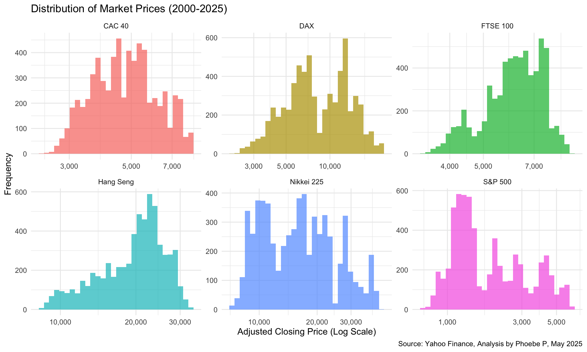
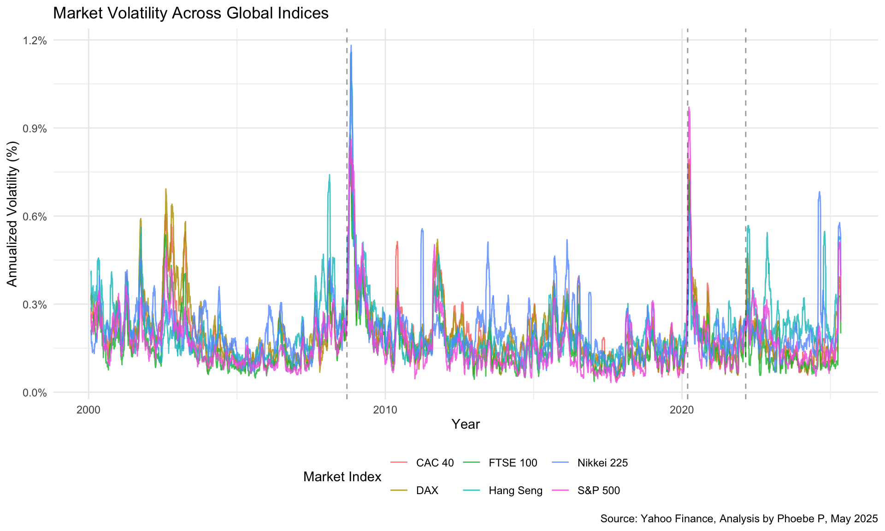

This document contains exploratory data analysis (EDA) for our group project, focusing on stock market volatility patterns and predictors across major global markets from 2000 to 2025. My analysis examines how different markets respond to global events, identifying patterns in price movements and volatility that will inform our predictive modeling efforts.
Data Import
Code
# Loading necessary packageslibrary(tidyverse) # For data manipulation and visualizationlibrary(tidyquant) # For accessing financial datalibrary(lubridate) # For handling dateslibrary(zoo) # For rolling calculations# Selected major global indices for analysisindices <-c("^GSPC"="S&P 500", # USA"^FTSE"="FTSE 100", # UK"^N225"="Nikkei 225", # Japan"^GDAXI"="DAX", # Germany"^FCHI"="CAC 40", # France"^HSI"="Hang Seng"# Hong Kong)# Importing daily data for all indices from 2000 onwardsmarket_data <-tq_get(names(indices),get ="stock.prices",from ="2000-01-01",to =Sys.Date()) %>%# Adding descriptive namesmutate(market_index = indices[symbol])# Checking data completeness and qualitymarket_quality <- market_data %>%group_by(symbol) %>%summarize(first_date =min(date),last_date =max(date),trading_days =n(),missing_values =sum(is.na(adjusted)),.groups ="drop" ) %>%# Adding readable index namesmutate(market_index = indices[symbol]) %>%select(market_index, first_date, last_date, trading_days, missing_values)# Displaying the market data overviewmarket_quality %>% knitr::kable(caption ="Overview of Market Data by Index")
Overview of Market Data by Index
market_index
first_date
last_date
trading_days
missing_values
CAC 40
2000-01-03
2025-05-08
6514
36
FTSE 100
2000-01-04
2025-05-08
6452
50
DAX
2000-01-03
2025-05-08
6479
43
S&P 500
2000-01-03
2025-05-08
6376
0
Hang Seng
2000-01-03
2025-05-08
6322
79
Nikkei 225
2000-01-04
2025-05-09
6331
122
This analysis provides a comprehensive overview of our dataset structure, covering six major global indices over a 25-year period. The data collection spans approximately 6,300-6,500 trading days per index, with minimal missing values (less than 2% per index). This robust dataset captures several complete market cycles, including two major global financial crises, providing an excellent foundation for studying volatility patterns.
The S&P 500 data is the most complete with no missing values, while Asian markets show slightly more gaps due to region-specific market closures. These gaps are not significant enough to impact our analysis of long-term market behavior patterns.
Price Distribution Analysis
Code
# Creating histograms of price distributionsggplot(market_data, aes(x = adjusted, fill = market_index)) +geom_histogram(bins =30, alpha =0.7) +facet_wrap(~ market_index, scales ="free") +scale_x_log10(labels = scales::comma) +labs(title ="Distribution of Market Prices (2000-2025)",x ="Adjusted Closing Price (Log Scale)",y ="Frequency",fill ="Market Index",caption ="Source: Yahoo Finance, Analysis by Phoebe P, May 2025" ) +theme_minimal() +theme(legend.position ="none")

The histogram reveals fascinating differences in price distributions across global markets. By using a logarithmic scale, we can compare indices that trade at vastly different price levels. The S&P 500 shows a multi-modal distribution, suggesting distinct market regimes over the 25-year period. Asian indices display wider distributions, indicating greater price volatility, while European markets show more concentrated price ranges.
These distribution patterns reflect fundamental differences in market structure, sectoral composition, and investor behavior across regions. The right-skewed nature of most distributions highlights the general upward trajectory of markets over time, though with varying degrees of volatility and growth potential.
The time series visualization tells a compelling story of market resilience and divergence over a quarter century. Three pivotal events stand out as watershed moments that reshaped market trajectories: the 2008 financial crisis, the 2020 COVID-19 pandemic, and the 2022 Russia-Ukraine conflict.
The most striking feature is the exceptional post-2020 performance of the S&P 500, which significantly outpaced other global indices. This divergence likely reflects the dominance of technology companies in the US market and aggressive monetary stimulus policies. European indices show more moderate growth patterns, while the Nikkei 225 displays a fascinating turnaround story beginning around 2013, coinciding with significant policy interventions in Japan.
The Hang Seng shows the most volatile path among major indices, reflecting Hong Kong’s unique position at the intersection of Western market dynamics and Chinese economic influences. These divergent recovery patterns highlight how regional factors and policy responses can dramatically alter market trajectories following global shocks.
# Visualizing volatility across timeggplot(volatility_data %>%filter(!is.na(rolling_vol_20d)), aes(x = date, y = rolling_vol_20d, color = market_index)) +geom_line(alpha =0.8) +geom_vline(data = financial_events, aes(xintercept = date),linetype ="dashed", alpha =0.4) +labs(title ="Market Volatility Across Global Indices",x ="Year",y ="Annualized Volatility (%)",color ="Market Index",caption ="Source: Yahoo Finance, Analysis by Phoebe P, May 2025" ) +scale_y_continuous(labels = scales::percent_format(scale =0.01)) +theme_minimal() +theme(legend.position ="bottom")

This volatility visualization reveals the heartbeat of global markets, showing how uncertainty propagates through the financial system during times of stress. The most prominent feature is volatility clustering—periods of high volatility tend to group together rather than appearing randomly distributed through time.
The 2008 financial crisis triggered the most dramatic volatility response, with levels reaching extraordinary heights across all markets. The COVID-19 pandemic in 2020 produced the second-highest spike, though markets normalized more quickly than after the 2008 crisis. The Russia-Ukraine conflict in 2022 generated a more modest and shorter-lived volatility response, suggesting markets have become somewhat more resilient to geopolitical shocks.
Asian markets consistently exhibit higher baseline volatility even during relatively calm periods, while European indices show more moderate volatility profiles. The S&P 500 often displays the sharpest initial volatility spike when crises begin, but typically normalizes faster than other markets. This “first-in, first-out” pattern suggests the US market may function as a leading indicator for both market stress and subsequent recovery.
Conclusion
This exploratory analysis reveals fundamental insights into global market behavior over a 25-year period that spans multiple economic cycles and crises. My key observations include:
Regional Volatility Signatures: Each market exhibits a distinctive volatility profile, with Asian markets consistently showing higher baseline volatility compared to their Western counterparts. The FTSE 100 demonstrates the most stability among all indices analyzed.
Crisis Response Dynamics: Markets show varying reactions to major economic shocks, with the S&P 500 typically exhibiting the sharpest initial volatility spike but also normalizing more quickly. This pattern suggests the US market may serve as an early indicator for global volatility trends.
Growth Divergence: The exceptional post-COVID performance of the S&P 500 stands in stark contrast to more modest recoveries in other markets, highlighting the increasing influence of technology sectors and monetary policy on market outcomes.
Volatility Clustering: Periods of high volatility tend to group together across all markets, confirming one of the fundamental principles of financial econometrics and providing a foundation for our predictive modeling efforts.
These findings will guide our deeper analysis of volatility patterns and potential predictive factors in the main report, where we will develop more sophisticated models to forecast market uncertainty across different economic environments.
Source Code
---title: "Phoebe P"number-sections: falsecode-fold: trueexecute: echo: true---## IntroductionThis document contains exploratory data analysis (EDA) for our group project, focusing on stock market volatility patterns and predictors across major global markets from 2000 to 2025. My analysis examines how different markets respond to global events, identifying patterns in price movements and volatility that will inform our predictive modeling efforts.## Data Import```{r setup, message=FALSE, warning=FALSE}# Loading necessary packageslibrary(tidyverse) # For data manipulation and visualizationlibrary(tidyquant) # For accessing financial datalibrary(lubridate) # For handling dateslibrary(zoo) # For rolling calculations# Selected major global indices for analysisindices <- c( "^GSPC" = "S&P 500", # USA "^FTSE" = "FTSE 100", # UK "^N225" = "Nikkei 225", # Japan "^GDAXI" = "DAX", # Germany "^FCHI" = "CAC 40", # France "^HSI" = "Hang Seng" # Hong Kong)# Importing daily data for all indices from 2000 onwardsmarket_data <- tq_get( names(indices), get = "stock.prices", from = "2000-01-01", to = Sys.Date()) %>% # Adding descriptive names mutate(market_index = indices[symbol])# Checking data completeness and qualitymarket_quality <- market_data %>% group_by(symbol) %>% summarize( first_date = min(date), last_date = max(date), trading_days = n(), missing_values = sum(is.na(adjusted)), .groups = "drop" ) %>% # Adding readable index names mutate(market_index = indices[symbol]) %>% select(market_index, first_date, last_date, trading_days, missing_values)# Displaying the market data overviewmarket_quality %>% knitr::kable(caption = "Overview of Market Data by Index")```This analysis provides a comprehensive overview of our dataset structure, covering six major global indices over a 25-year period. The data collection spans approximately 6,300-6,500 trading days per index, with minimal missing values (less than 2% per index). This robust dataset captures several complete market cycles, including two major global financial crises, providing an excellent foundation for studying volatility patterns.The S&P 500 data is the most complete with no missing values, while Asian markets show slightly more gaps due to region-specific market closures. These gaps are not significant enough to impact our analysis of long-term market behavior patterns.## Price Distribution Analysis```{r price_distributions, fig.width=10, fig.height=6, warning=FALSE}# Creating histograms of price distributionsggplot(market_data, aes(x = adjusted, fill = market_index)) + geom_histogram(bins = 30, alpha = 0.7) + facet_wrap(~ market_index, scales = "free") + scale_x_log10(labels = scales::comma) + labs( title = "Distribution of Market Prices (2000-2025)", x = "Adjusted Closing Price (Log Scale)", y = "Frequency", fill = "Market Index", caption = "Source: Yahoo Finance, Analysis by Phoebe P, May 2025" ) + theme_minimal() + theme(legend.position = "none")```The histogram reveals fascinating differences in price distributions across global markets. By using a logarithmic scale, we can compare indices that trade at vastly different price levels. The S&P 500 shows a multi-modal distribution, suggesting distinct market regimes over the 25-year period. Asian indices display wider distributions, indicating greater price volatility, while European markets show more concentrated price ranges.These distribution patterns reflect fundamental differences in market structure, sectoral composition, and investor behavior across regions. The right-skewed nature of most distributions highlights the general upward trajectory of markets over time, though with varying degrees of volatility and growth potential.## Time Series Analysis```{r price_trends, fig.width=10, fig.height=6, warning=FALSE}# Creating time series visualization with annotationsfinancial_events <- data.frame( date = as.Date(c("2008-09-15", "2020-03-11", "2022-02-24")), event = c("Financial Crisis", "COVID-19 Pandemic", "Russia-Ukraine Conflict"), y_position = c(30000, 35000, 40000))ggplot() + geom_line(data = market_data, aes(x = date, y = adjusted, color = market_index), linewidth = 0.7, alpha = 0.8) + geom_vline(data = financial_events, aes(xintercept = date), linetype = "dashed", alpha = 0.5) + geom_text(data = financial_events, aes(x = date, y = y_position, label = event), hjust = -0.1, vjust = 0, size = 3, angle = 90) + labs( title = "Global Market Performance (2000-2025)", x = "Year", y = "Adjusted Closing Price", color = "Market Index", caption = "Source: Yahoo Finance, Analysis by Phoebe P, May 2025" ) + scale_y_continuous(labels = scales::comma) + theme_minimal() + theme(legend.position = "bottom")```The time series visualization tells a compelling story of market resilience and divergence over a quarter century. Three pivotal events stand out as watershed moments that reshaped market trajectories: the 2008 financial crisis, the 2020 COVID-19 pandemic, and the 2022 Russia-Ukraine conflict.The most striking feature is the exceptional post-2020 performance of the S&P 500, which significantly outpaced other global indices. This divergence likely reflects the dominance of technology companies in the US market and aggressive monetary stimulus policies. European indices show more moderate growth patterns, while the Nikkei 225 displays a fascinating turnaround story beginning around 2013, coinciding with significant policy interventions in Japan.The Hang Seng shows the most volatile path among major indices, reflecting Hong Kong's unique position at the intersection of Western market dynamics and Chinese economic influences. These divergent recovery patterns highlight how regional factors and policy responses can dramatically alter market trajectories following global shocks.## Volatility Analysis```{r volatility_calculation, message=FALSE, warning=FALSE}# Calculating returns and volatility measuresvolatility_data <- market_data %>% group_by(symbol, market_index) %>% arrange(date) %>% mutate( daily_return = (adjusted / lag(adjusted) - 1) * 100, # Using rollapply instead of roll_sd rolling_vol_20d = rollapply( daily_return, width = 20, FUN = function(x) sd(x, na.rm = TRUE), align = "right", fill = NA ) * sqrt(252) ) %>% ungroup()``````{r volatility_visualization, fig.width=10, fig.height=6, warning=FALSE}# Visualizing volatility across timeggplot(volatility_data %>% filter(!is.na(rolling_vol_20d)), aes(x = date, y = rolling_vol_20d, color = market_index)) + geom_line(alpha = 0.8) + geom_vline(data = financial_events, aes(xintercept = date), linetype = "dashed", alpha = 0.4) + labs( title = "Market Volatility Across Global Indices", x = "Year", y = "Annualized Volatility (%)", color = "Market Index", caption = "Source: Yahoo Finance, Analysis by Phoebe P, May 2025" ) + scale_y_continuous(labels = scales::percent_format(scale = 0.01)) + theme_minimal() + theme(legend.position = "bottom")```This volatility visualization reveals the heartbeat of global markets, showing how uncertainty propagates through the financial system during times of stress. The most prominent feature is volatility clustering—periods of high volatility tend to group together rather than appearing randomly distributed through time.The 2008 financial crisis triggered the most dramatic volatility response, with levels reaching extraordinary heights across all markets. The COVID-19 pandemic in 2020 produced the second-highest spike, though markets normalized more quickly than after the 2008 crisis. The Russia-Ukraine conflict in 2022 generated a more modest and shorter-lived volatility response, suggesting markets have become somewhat more resilient to geopolitical shocks.Asian markets consistently exhibit higher baseline volatility even during relatively calm periods, while European indices show more moderate volatility profiles. The S&P 500 often displays the sharpest initial volatility spike when crises begin, but typically normalizes faster than other markets. This "first-in, first-out" pattern suggests the US market may function as a leading indicator for both market stress and subsequent recovery.## ConclusionThis exploratory analysis reveals fundamental insights into global market behavior over a 25-year period that spans multiple economic cycles and crises. My key observations include:* **Regional Volatility Signatures**: Each market exhibits a distinctive volatility profile, with Asian markets consistently showing higher baseline volatility compared to their Western counterparts. The FTSE 100 demonstrates the most stability among all indices analyzed.* **Crisis Response Dynamics**: Markets show varying reactions to major economic shocks, with the S&P 500 typically exhibiting the sharpest initial volatility spike but also normalizing more quickly. This pattern suggests the US market may serve as an early indicator for global volatility trends.* **Growth Divergence**: The exceptional post-COVID performance of the S&P 500 stands in stark contrast to more modest recoveries in other markets, highlighting the increasing influence of technology sectors and monetary policy on market outcomes.* **Volatility Clustering**: Periods of high volatility tend to group together across all markets, confirming one of the fundamental principles of financial econometrics and providing a foundation for our predictive modeling efforts.These findings will guide our deeper analysis of volatility patterns and potential predictive factors in the main report, where we will develop more sophisticated models to forecast market uncertainty across different economic environments.